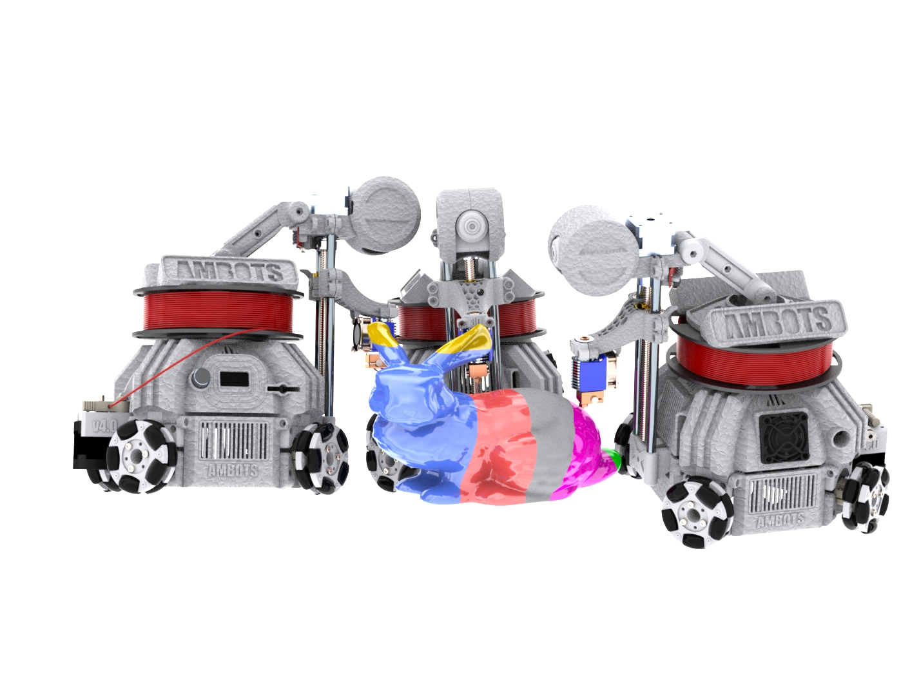
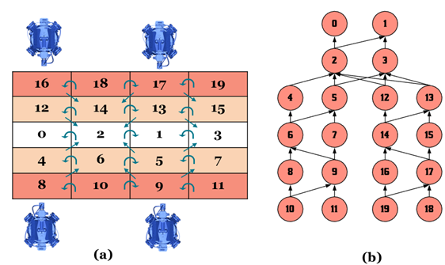
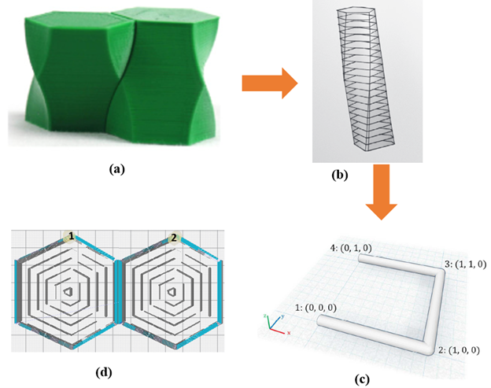

I am a PhD graduate from the University of Arkansas. During my PhD, I worked under the guidance of Dr. Zhenghui Sha at the System Integration and Design Informatics Laboratory (SIDI).
I completed my Bachelors of science in Mechanical Engineering at University of Arkansas.My research focuses on building computational models for multi-robot cooperative 3D printing system.
The development of such system involves research on multi-level decision-making, evolving geometric constraints, optimization and design heuristics etc.
Once the printing is complete, if additional assembly is required, assembly robots will take the task of doing so, which results in minimal to no human intervention while completing the manufacturing of a part in minimal time.
I have worked on cooperative 3D printing systems for last three years
Experience
Software Engineer
AMBOTS Inc.
I developed and implemented geometric partitioning algorithms on the backend that was used to divide a STL model into smaller pieces for multi-robot printing system. In addition to this, I developed flowcharts, layouts, and documentation to identify requirements and solutions for such systems. My responsibilities also included integrating software components into a fully functional software system through troubleshooting, debugging, and upgrading the existing system.
May 2018 - Present
Graduate Research Assistant
SIDI Lab, University of Arkansas
During my time as graduate research assistant, I developed several computational framework for multi-robot 3D printing. I developed and studied the chunking method (process of dividing a large geometry into smaller "chunks", so that they can be assigned to invidual robots for printing). Based on the said chunking method, I developed scheduling frameworks that allowed simultaneous printing of the assigned chunks by multiple robot without colliding with each other while being aware of the changing environment. I also developed a decentralized approach to multi-robot planning based on simple set of rules, similar to traffic rules followed by human, that could gurantee collision free printing of a chunked object.
August 2017 - August 2021
Line-Support Engineer
Positronic Industries
I designed, prototyped, and validated new tools using SOLIDWORKS and AutoCAD for manufacturing high end connectors. I worked closely with the machine/tool operators on manufacturing floor to help eliminate inconcistencies and defects caused by faulty tooling as well as inefficient station setup or product flow using the lean/six-sigma principles. Additionally, I created value stream maps and process flow for different product to locate inefficiencies in manufacturing product lines using lucidchart and visio. I also restored bend machines (used to bend connectors leads) and automated striper machine (used to add stripes of paint on the leads) usig PLC programming to automate the manufacturing tasks.
March 2015 - June 2017
Process Engineering Intern
Sager Creek Vegetable Company
I located wastes and loss in a production line and provided suggestions to eliminate them. I assisted engineers in creating standard operation procedures (SOP) for different can products.
July 2014 - December 2014
Education
University of Arkansas Fayetteville
Bachelor of Science
Mechanical Engineering
December 2014
University of Arkansas Fayetteville
Philosophy of Doctorate
Mechanical Engineering
Expected: December 2021
Skills
Programming Languages and Tools
Workflow
Cross Browser Testing & Debugging
Cross Functional Teams
Agile Development & Scrum
Projects
Development of Sloped-Surface Chunking Strategy
In order to allow multi-robot printing, a part has to be divided into multiple chunks. These chunks can then be assigned to the individual robots for printing. It needs to be made sure that such chunking allows multi-robot printing simultaneously. Sloped-surface chunking strategy divides a chunk using sloped plane both along X as well as Y-direction.

Computational Framework for Multi-robot Scheduling
Planning for multi-robot 3D printing requires collision-freee schedule generation. Such collision free printing requires consideration of dynamic manufacturing constraints that are changing both in space and time as new meaterials are printed continuously by different robots. I developed algorithm that can explore large design space to generate print schedules for multiple robots, check the validity of the generated print schedules (whether or not the schedule will result in collision free printing), and evaluate the generated print schedules.

Cooperation between the robots at layer-level printing
Although discretizing a STL file into multiple chunks and assigning the chunks to the individual robots allows cooperation between the robots at chunk-level while printing, such cooperation can also take place at layer-level. The printing robots can cooperate with each other while printing the individual layers of the chunks. An object can be discretized into multiple chunks using voronoi decomposition. The cooperating robots then can cooperate while printing the individual layers of the adjacent voronoi sites. Such cooperation provides closer control but also demands careful planning.

Publications
Peer-Reviewed Journal Articles
Poudel, L., C. Blair, J. McPherson, Z. Sha, W. Zhou, (2020) “A Heuristic Scaling Strategy for Multi-Robot Cooperative Three-Dimensional Printing.” , Journal of Computing and Information Science in Engineering 20, no. 4.
Poudel, L., W. Zhou, Z. Sha, 2020, “A Generative Approach for Scheduling Multi-Robot Cooperative Three-Dimensional Printing.”, Journal of Computing and Information Science in Engineering 20, no. 6.
Zhang, Z., L. Poudel , Z. Sha, W. Zhou, D. Wu, 2020, “Data-Driven Predictive Modeling of Tensile Behavior of Parts Fabricated by Cooperative 3D Printing.” Journal of Computing and Information Science in Engineering 20, no. 2.
Poudel, L., W. Zhou, Z. Sha, 2021, “Resource-Constrained Scheduling for Multi-Robot Cooperative 3D Printing”, Journal of Mechanical Design, pp 1-29.
Poudel, L., L.G. Marques, R.A. Williams, Z. Hyden, P. Guerra, O.L. Fowler, S.J. Moquin, Z. Sha, W. Zhou, 2021, “Towards Swarm Manufacturing: Architecting A Cooperative 3d Printing System”, Journal of Manufacturing Science and Engineering, In review.
Referred Conference Papers
Poudel, L., W. Zhou, Z. Sha, “Mechanical Strength of Chunk-Based 3D Printed Parts”, In proceedings of 46th SME North American Manufacturing Research Conference, NAMRC 46, Texas. June 18-22, 2018.
Poudel, L., W. Zhou, Z. Sha, “Computational Design of Scheduling Strategies for Multi-Robot Cooperative 3D Printing.”, In International Design Engineering Technical Conferences and Computers and Information in Engineering Conference, vol. 59179, p. V001T02A014. American Society of Mechanical Engineers, 2019.
Poudel, L., L.G. Marques, R.A. Williams, Z. Hyden, P. Guerra, O.L. Fowler, S.J. Moquin, W. Zhou, Z. Sha, “Architecting the Cooperative 3D Printing System.”, In ASME 2020 International Design Engineering Technical Conferences and Computers and Information in Engineering Conference. American Society of Mechanical Engineers Digital Collection, 2020.
Elagandula, S., L. Poudel, Z. Sha, W. Zhou, “Multi-Robot Path Planning for Cooperative 3d Printing,”, In Proceedings of the ASME 2020 15th International Manufacturing Science and Engineering Conference, 2020.
Elagandula, S., L. Poudel, W. Zhou, Z. Sha, “Enabling Multi-Robot Cooperative Additive Manufacturing: Centralized vs. Decentralized Approaches”, To appear in ASME 2021 International Design Engineering Technical Conferences and Computers and Information in Engineering Conference. American Society of Mechanical Engineers Digital Collection, 2021.
Awards & Certifications
2020 Excellence Researcher Award
2
nd
Place : 2020 ASME IDETC Hackathon
CIE 2019 Award for poster presentation
CIE 2018 Award for poster presentation
NSF-funded Summer School on Decision Making winner